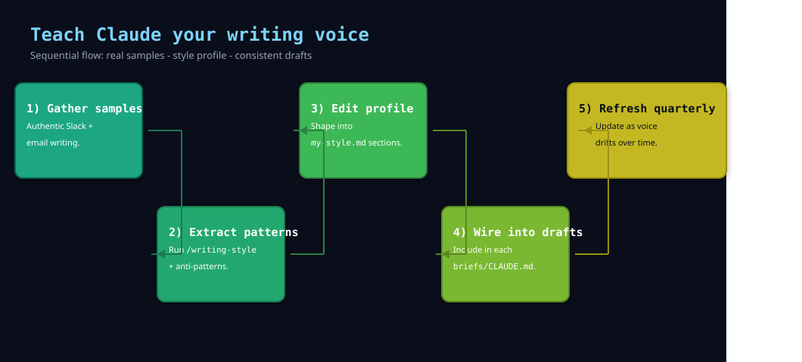

Teach Claude your writing voice

I asked for a project update and got competent stranger voice—right facts, wrong cadence, sign-off from someone I’d never met. I exported real sends: Slack threads, mail I’d actually filed. /writing-style turned that corpus into my-style.md with greetings, hedges, stuff I never say, and per-channel rules. Next draft matched how I open, how I punctuate, how I close. The shift was audible in the first paragraph.
When I reach for this #
Outreach, updates, or docs need to read as me, not as generic assistant prose. Or I’m switching contexts (DM vs email vs long article) and I want different rules per channel.
What I need before starting #
- The
/writing-styleskill or an equivalent workflow you use for style extraction - A corpus: recent Slack DMs or threads you wrote, sent mail, published docs — enough volume that patterns repeat
- A place to save the profile (
my-style.mdin the project or~/.claude/)
What I do #
I treat voice as documentation: I extract observable patterns — sentence length, hedging, how I ask for things, what I never say — and save a file Claude loads when drafting.
1. Gather raw samples #
Export or copy messages you actually sent, not messages you admire. Include at least one tense thread and one calm one. For mail, grab full threads so openings and sign-offs stay attached to context.
2. Run the style skill #
Let it label vocabulary, rhythm, greeting and closing habits, how you frame asks, and anti-patterns — phrases you avoid, tones that read off-brand. The skill should output structured sections, not a paragraph of praise.
3. Edit into a reference file #
Keep detection rules explicit: “In DMs I use short lines and rare exclamation points.” “In external email I spell out acronyms on first use.” “I sign with first name only.” Cut anything that sounds like a personality horoscope; keep what a copy editor could verify.
4. Wire the file into drafts #
Point CLAUDE.md, a skill, or the session prompt at my-style.md whenever voice matters. For long articles, add a subsection for headings, citations, and paragraph length — different from Slack defaults.
5. Refresh on a schedule #
Your voice drifts. Quarterly, drop in ten new messages and merge deltas. Stale profiles slowly turn drafts into a younger version of you.
What goes wrong #
- Training on aspirational text — samples of how you wish you wrote, not how you write. Output becomes performative. Fix: use the boring real corpus.
- One profile for every context — DMs sound like press releases or vice versa. Fix: split sections by context with clear triggers.
- Overfitting to tics — the model picks up one repeated joke or filler word and amplifies it. Fix: add an anti-pattern line: “Never use ‘circle back’ unironically.”
- Profile too long — a ten-page style doc gets ignored or partially loaded. Fix: keep under what your workflow reliably loads; link out to examples sparingly.
Notes #
Pairing — this sits next to skills for specific deliverables: the style file is global taste; a brief or report skill handles structure. I update both when org comms norms shift.
Privacy — if mail export is awkward, I paste anonymized samples manually. The goal is a linguistic fingerprint, not confidential content—I redact names and numbers before they l